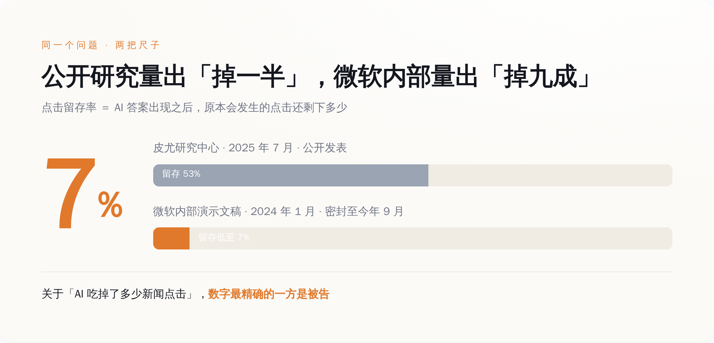
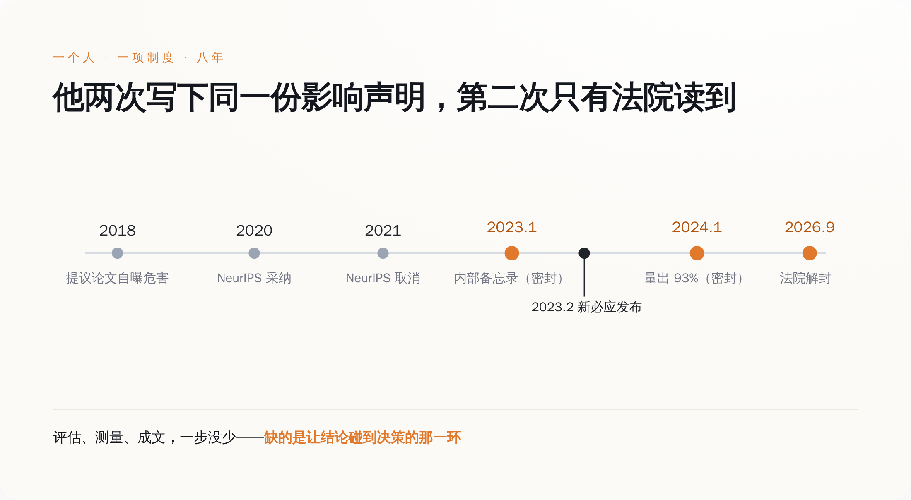

一、金句被引爆，那张图没人看
先把文件说清楚。2026 年 9 月 17 日，纽约南区法院解封了一批此前被大面积涂黑的文件。文件本身是"新闻方原告"——《纽约时报》、《纽约每日新闻》、调查报道中心——向 Sidney Stein 法官提交的简易判决联合意见书的未删节版本。案子是 2023 年 12 月立的，到现在快三年。
意见书里引的，是微软和 OpenAI 员工的内部通信和高管证词。媒体挑出来做标题的有这么几条：
Brent Hecht 在 2023 年 1 月的一份内部备忘录里，把用未授权内容做训练这件事称为"一场规模空前的、令人震惊的盗窃"，另一处写的是"人类历史上规模最大的劳动盗窃"。OpenAI 的 ChatGPT 负责人 Nick Turley 在 2023 年 6 月写下"生存威胁"，2024 年 2 月又补了一句，说公司的产品"在很大程度上具有替代性，句号"，而且"会随着变好而越来越具有替代性"。还有一段更直白的：OpenAI 研究员 Nick Ryder 告诉 Greg Brockman，自己找到了"一个绕过纽约时报付费墙的窍门"，Brockman 回了两个字，"啊，不错"。
这些话很好传播。中文互联网这几天转的基本也是这几句，腾讯新闻、新浪财经、凤凰网，标题里轮流出现"劳动窃取""认了""早知道"。
但这批文件里真正硬的东西不是金句，是 Hecht 在 2024 年 1 月那份内部演示文稿里的一组测量数据：微软自家的 Copilot 答案引擎，让 nytimes.com 这个域名的点击率，相比传统必应搜索下降了八成以上，最高到 93%。Ziff Davis 旗下的域名——IGN、Eurogamer 那一票——是 51% 到 94%。
这个数字值得单独拎出来对照一下。外部世界关于"AI 摘要吃掉新闻点击"这件事，最权威的公开测量来自皮尤研究中心 2025 年 7 月发布的一项研究：追踪约 900 名美国成年人的真实浏览行为，覆盖 68,879 次谷歌搜索，其中 12,593 次触发了 AI 摘要。结论是，出现 AI 摘要时，用户点击传统结果链接的比例是 8%；没有 AI 摘要时是 15%。点击摘要内部引用链接的比例，1%。
掉了将近一半。这是过去一年被引用最多的那个数字，出版商拿它去游说，研究者拿它写论文，媒体拿它做标题。而微软内部拿到的数字，是掉九成。

二、为什么该看那个数字，而不是那句金句
金句是可以被消解的，而且已经被消解了。
Hecht 的话见报当天，微软发言人的回应是一句标准操作：这些评论反映的是"一名员工的个人看法，不是法律分析，不代表公司立场"。
这套说辞挑不出毛病。任何一家十万人的公司，内部永远有人写措辞激烈的备忘录，这是大公司正常运转的一部分，不是定罪证据。微软还补了一段，说 Copilot 属于转换性使用，不构成对出版商新闻业务的替代，立场都写在法庭文件里了。
"个人看法"这四个字能罩住"人类历史上最大规模的劳动盗窃"，因为那确实是一句价值判断，是一个人对一件事的道德定性。你可以说他写得对，也可以说他写得过火。
罩不住 93%。
那不是看法。那是用微软自己的产品、自己的服务器日志、自己的对照方法，对自己的流量分发行为做的一次测量。它有基准组（传统必应搜索），有实验组（Copilot 答案引擎），有明确的观测对象（nytimes.com 这个域名），有结果。
这东西在版权诉讼里的位置很微妙。合理使用抗辩有四个要素，第四个是"对原作品潜在市场的影响"。原告要证明的核心是替代——不是"你抄了我的字"，而是"你让读者不必再来找我"。Turley 那句"在很大程度上具有替代性，句号"是替代的自述，93% 是替代的度量。原告把它们放进同一份意见书，用意不难猜。
同一批文件里还有一组数字：OpenAI 的中期训练数据集中，包含超过 91,692 份来自《纽约时报》、《每日新闻》和调查报道中心的作品副本。
这个案子会怎么判，我不知道，Stein 法官 2025 年 4 月那次裁决也没碰合理使用这一层，只是把大部分驳回动议挡了回去，让案子继续走。法律结论不是我要下的。
我想说的是另一件事：这批数字不是外部研究者挖出来的，是微软自己做出来的。有人立了项，有人跑了对照，有人做成 PPT 讲给同事听。公司内部存在一套完整的、运转良好的影响评估机制。
它算出了准确答案。然后答案进了抽屉，直到一张传票把它撬出来。
三、做这份评估的人，是靠"做这份评估"成名的
现在说回 Brent Hecht。去微软之前，他在西北大学当副教授，带一个叫 People, Space, and Algorithms 的研究组，拿过美国国家科学基金会的 CAREER 奖，在 CHI、CSCW、ICWSM 这些会上拿过最佳论文。他早期的一批工作，被认为是"算法偏见"这个概念的奠基性研究之一。
2018 年，他和几位同行在 ACM 的博客上发了一篇东西，标题叫《该做点什么了：通过改变同行评审流程来缓解计算研究的负面影响》。主张很简单：论文投稿时，作者必须自己写清楚这项研究可能带来什么负面社会影响；评审不负责判断影响的好坏，只负责评估作者披露得够不够严谨。
2020 年，NeurIPS——机器学习最大的那个会——采纳了。那一年所有投稿论文都必须附一段 Broader Impact Statement。
2021 年，NeurIPS 把这条要求取消了，换成一份勾选清单。
这件事在学界当时有过一轮讨论，结论大致是：作者写得敷衍，评审不知道怎么评，制度成本高于收益。总之它没活过两届。
再往后，Hecht 去了微软研究院，职位是应用科学合伙人总监。
这里有个细节，是这整件事最值得琢磨的地方，而且它不在任何一份密封文件里——它就挂在微软官网上，现在还能打开看。
微软研究院给 Hecht 写的个人页面上，对他研究方向的描述是：构建可持续的 AI 内容生态，让 AI 用户、AI 公司、内容和数据生产者三方都受益。同一页还写着，他曾是 ACM FAccT（负责任 AI 研究的头部会议）创始执行委员会成员，并且"在推动 AI 研究者更深入地思考自身工作的社会影响这一运动中，起到了关键的催化作用"，页面里直接点名了 NeurIPS 的作者们。
这段话是微软自己写的，公开挂着，用来介绍这位研究员有多重要。
所以事情是这样的：微软招了一个人，公开宣传他的专长是评估 AI 对内容生态的损害；这个人做了评估，量出了 93%，写了备忘录，做了演示；三年后这份东西被法院解封，微软对它的定性是——
一名员工的个人看法。
四、这套制度死了两次
第一次是公开死的。2021 年 NeurIPS 投票取消影响声明，理由体面，过程透明，学界讨论了几轮，大家都知道它没了。
第二次没人看见。
Hecht 那份备忘录写于 2023 年 1 月。微软发布"新必应"——内置聊天的那一版，后来改名叫 Copilot——是 2023 年 2 月 7 日。
写在发布前一个月。
那份带 93% 的演示文稿是 2024 年 1 月，产品已经跑了将近一年，数据是真实用户的真实行为。他在同一份材料里给这个循环起了名字，叫 doom loop：答案引擎截走点击，出版商收入下滑，原创内容产出减少，而模型下一轮要吃的正是这些内容，最后"同时损害我们模型的表现和整个互联网"。
他还担心过另一件事，用的词是"意外的掩盖"。
这些材料从写出来那天起就是密封的。不是被反驳、被否决、被公开争论后搁置，是没有任何一个外部的人知道它们存在，直到 2026 年 9 月 17 日，法院把涂黑的部分去掉。
让这份影响声明见光的机制，叫传票。把时间线拉平了看，中间那段更难堪。

Hecht 写下"规模空前的盗窃"是 2023 年 1 月，Turley 写下"生存威胁"是 2023 年 6 月。
而 OpenAI 和出版商签授权协议的时间，按公开报道：美联社 2023 年 7 月，阿克塞尔·施普林格 2023 年 12 月，《金融时报》2024 年 4 月，新闻集团 2024 年 5 月，康泰纳仕 2024 年 8 月。
两份内部判断，都早于所有这些协议。这一点很要紧，因为它把"公司没想到"这个解释彻底堵死了。谈判桌上那一方，口袋里揣着自己人写的"这可能是史上最大规模劳动盗窃"，然后按每年千万美元量级的价格，把风险买断了。（具体金额多为媒体援引知情人士的估算，双方基本都没在正式文件里确认过，这本身也挺说明问题。）
这不是失明，是算过账，算完了觉得这个价格能接受。
五、所以别再问"做没做过评估"了
Hecht 给那个循环起名叫 doom loop，说的是一件在商业上相当反直觉的事：这套打法最后会反噬打它的人。
理解图 HTML
<div class="illustration">
<div class="kicker">DOOM LOOP · 微软内部演示文稿，2024 年 1 月</div>
<h2>截流截到最后，断的是自己的粮</h2>
<svg viewBox="0 0 1000 470" style="width:100%;margin-top:6px">
<defs>
<marker id="ah" markerWidth="11" markerHeight="11" refX="8" refY="4" orient="auto">
<path d="M0,0 L9,4 L0,8 Z" fill="#E0792B"/>
</marker>
</defs>
<path d="M 500,75 A 160,160 0 0 1 655,215" fill="none" stroke="#E0792B" stroke-width="2.5" marker-end="url(#ah)"/>
<path d="M 660,250 A 160,160 0 0 1 505,388" fill="none" stroke="#E0792B" stroke-width="2.5" marker-end="url(#ah)"/>
<path d="M 495,388 A 160,160 0 0 1 340,250" fill="none" stroke="#E0792B" stroke-width="2.5" marker-end="url(#ah)"/>
<path d="M 340,215 A 160,160 0 0 1 495,75" fill="none" stroke="#E0792B" stroke-width="2.5" marker-end="url(#ah)"/>
<rect x="352" y="14" width="296" height="62" rx="10" fill="#FFFFFF" stroke="#D7DCE3"/>
<text x="500" y="41" text-anchor="middle" font-size="19" fill="#22242B">答案引擎直接给出答案</text>
<text x="500" y="64" text-anchor="middle" font-size="16" fill="#717584">用户不必再点进原文</text>
<rect x="654" y="202" width="300" height="62" rx="10" fill="#FFFFFF" stroke="#D7DCE3"/>
<text x="804" y="229" text-anchor="middle" font-size="19" fill="#22242B">出版商点击与收入下滑</text>
<text x="804" y="252" text-anchor="middle" font-size="16" fill="#B4560F">nytimes.com 最高降 93%</text>
<rect x="352" y="388" width="296" height="62" rx="10" fill="#FFFFFF" stroke="#D7DCE3"/>
<text x="500" y="415" text-anchor="middle" font-size="19" fill="#22242B">原创报道产出减少</text>
<text x="500" y="438" text-anchor="middle" font-size="16" fill="#717584">养不起记者，就没有新稿子</text>
<rect x="46" y="202" width="300" height="62" rx="10" fill="#FFFFFF" stroke="#D7DCE3"/>
<text x="196" y="229" text-anchor="middle" font-size="19" fill="#22242B">下一轮训练没东西可吃</text>
<text x="196" y="252" text-anchor="middle" font-size="16" fill="#717584">模型质量跟着退</text>
</svg>
<div class="punch">他的原话：这会<b>同时损害我们模型的表现和整个互联网</b></div>
</div>
出版商这一头，现在的账是这么算的。《纽约时报》公司 2026 年第二季度的数字：订阅总数约 1335 万，其中纯数字订阅约 1280 万，比上一季度净增约 28 万。看着不像一家正在被杀死的公司。但同一份财报里，"联盟营销、授权及其他"收入同比增长 510 万美元、7.1%，公司自己给的解释是，增长主要来自 Wirecutter 的联盟推荐收入。
也就是说，在报表口径上，把这家公司托起来的不是 AI 授权费，是它的好物推荐页面在抽佣。
至于 AI 内容该值多少钱，目前唯一给出过明确数字的不是谈判桌，是法院：Bartz 诉 Anthropic 案，15 亿美元和解，2026 年 7 月 20 日获终审批准，美国史上最大的版权集体诉讼和解。
过去两年，"我们做了 AI 影响评估"已经变成一句标配的公关话术，每家公司都在说，红队、对齐、伦理委员会、负责任 AI 原则，PDF 出了一份又一份。而这批解封文件给出的，恰恰是这套说辞最尴尬的一个反例——微软的评估不但做了，还做得比外面所有公开研究都准，结论写得比原告的律师还狠。
评估没有失灵。评估环节是全流程里唯一正常工作的那一环。
失灵的是它后面接的东西：没有任何机制规定，这个结论必须被谁看到、必须在哪个会上被讨论、能不能拦住哪怕一次发布。它写完了，存档了，然后产品照常在一个月后上线。
所以下次再有人告诉你他们做了完整的影响评估，那句话基本不含信息量。值得问的是另外三个：评估结论谁有权看，它能否决什么，以及，除了被起诉之外，它有没有第二条见光的路。
到目前为止，这三个问题的答案分别是：法官、什么都否决不了、没有。
评估没有失灵。评估环节是全流程里唯一正常工作的那一环。失灵的是它后面接的东西：没有任何机制规定，这个结论必须被谁看到、必须在哪个会上被讨论、能不能拦住哪怕一次发布。
下次再有人说他们做了完整的影响评估，值得问的是另外三个问题：评估结论谁有权看，它能否决什么，除了被起诉之外它有没有第二条见光的路。